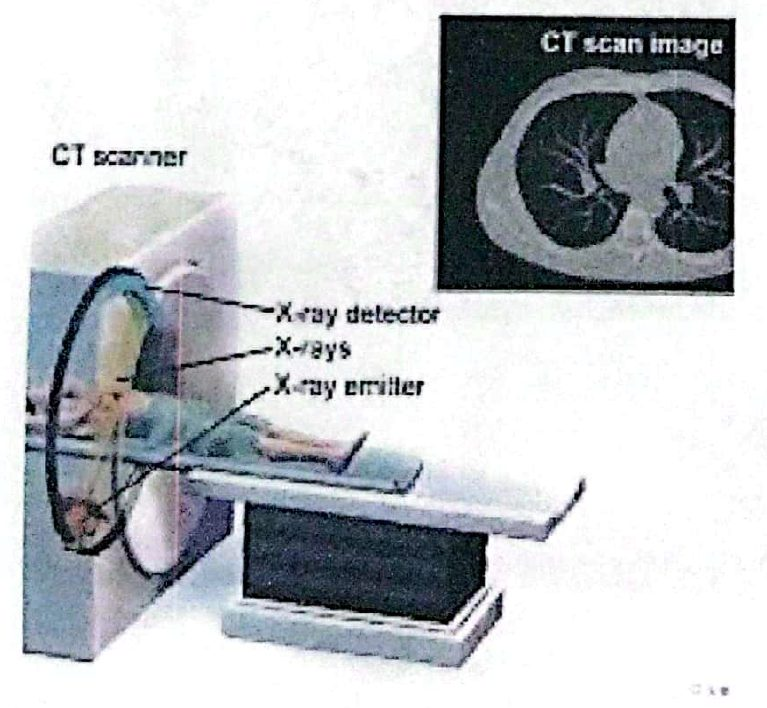
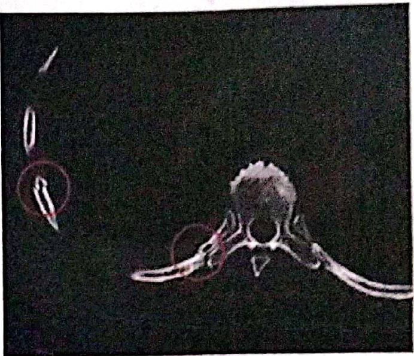

مقدمة المفراس وحدود الأشعة التقليديةIntroduction to Computed Tomography & Limitations of Conventional Radiography
عملي · م01 · 1.6 دقيقةأقسام المحاضرة (7)
- عناوين المحاضرةPractical Part (Experiment 1)
- مصطلح CTCT: Computed Tomography (Full Definition)
- تعريف التصوير المقطعي المحوسبDefinition of CT
- مكونات جهاز المفراسComponents of a CT System
- الاستعمالاتApplications
- مزايا المفراس وعيوبهAdvantages & Disadvantages of CT
- حدود التصوير الشعاعي التقليديLimitations of Conventional Radiography
عناوين المحاضرةPractical Part (Experiment 1)
Computed Tomography Equipment Techniques — Practical Part (Experiment 1)
تقنيات أجهزة التصوير المقطعي المحوسب، الجزء العملي (التجربة الأولى).
- 1. History of Computed Tomographyتاريخ التصوير المقطعي المحوسب.
- 2. Limitations of conventional radiographyحدود التصوير الشعاعي التقليدي.
مصطلح CTCT: Computed Tomography (Full Definition)

تعريف التصوير المقطعي المحوسبDefinition of CT


مكونات جهاز المفراسComponents of a CT System

الاستعمالاتApplications
CT is used in diagnosing conditions such: fractures, tumors, and vascular diseases, and is critical in planning surgeries and treatment.
يُستعمل المفراس في تشخيص حالات مثل: الكسور، والأورام، وأمراض الأوعية الدموية، وهو أساسي في التخطيط للعمليات الجراحية والعلاج.

مزايا المفراس وعيوبهAdvantages & Disadvantages of CT
المزاياAdvantages of CT
- 1. High-Resolution Imagingتصوير عالي الدقة.
- 2. Non-Invasive and Painlessغير باضع (لا يحتاج إلى تداخل جراحي) وغير مؤلم.
- 3. Quick Diagnosisتشخيص سريع.
- 4. Versatilityتعدد الاستعمالات.
- 5. Three-Dimensional Imagingتصوير ثلاثي الأبعاد.
العيوبDisadvantages of CT Scan
- 1. Radiation Exposureالتعرض للإشعاع.
- 2. Costالكلفة.
- 3. Limited Soft Tissue Contrastتباين محدود للأنسجة الرخوة.
- 4. Not Suitable for All Patientsغير مناسب لجميع المرضى.
حدود التصوير الشعاعي التقليديLimitations of Conventional Radiography
CT differs from the conventional radiography in two significant ways:
يختلف المفراس عن التصوير الشعاعي التقليدي في أمرين مهمّين:
- 1. First, CT forms a cross-sectional image, eliminating the superimposition of structures.الأول: يكوّن المفراس صورة مقطعية، فيلغي تراكب التراكيب بعضها فوق بعض.
- 2. Second, the sensitivity of CT to subtle differences in x-ray attenuation is ten times higher than that typically achieved by screen-film recording systems because of the virtual elimination of scatter.الثاني: حساسية المفراس للفروق الدقيقة في توهين الأشعة السينية أعلى بعشر مرات من الحساسية التي تحققها عادةً أنظمة التسجيل بالفيلم والشاشة المقوّية، وذلك بسبب الإزالة شبه الكاملة للأشعة المتشتتة.


المحاضرة مسموعة
نص الأستاذ بالإنكليزي مثل الأصل · 1.6 دقيقة. اضغط أي جملة تسمعها، أو مصطلح منقّط تسمع لفظه ومعناه.
Practical Part (Experiment 1)عناوين المحاضرة
Practical Part (Experiment 1)
Computed Tomography Equipment Techniques — Practical Part (Experiment 1)
History of Computed Tomography
Limitations of conventional radiography
CT: Computed Tomography (Full Definition)مصطلح CT
CT: Computed Tomography (Full Definition)
Definition of CTتعريف التصوير المقطعي المحوسب
Definition of CT
Computed Tomography (CT) is a medical imaging method that provides detailed cross-sectional images of various tissues in the body.
Components of a CT Systemمكونات جهاز المفراس
Components of a CT System
Applicationsالاستعمالات
Applications
CT is used in diagnosing conditions such: fractures, tumors, and vascular diseases, and is critical in planning surgeries and treatment.
Advantages & Disadvantages of CTمزايا المفراس وعيوبه
Advantages & Disadvantages of CT
Advantages of CT
High-Resolution Imaging
Non-Invasive and Painless
Quick Diagnosis
Versatility
Three-Dimensional Imaging
Disadvantages of CT Scan
Radiation Exposure
Cost
Limited Soft Tissue Contrast
Not Suitable for All Patients
Limitations of Conventional Radiographyحدود التصوير الشعاعي التقليدي
Limitations of Conventional Radiography
CT differs from the conventional radiography in two significant ways:
First, CT forms a cross-sectional image, eliminating the superimposition of structures.
Second, the sensitivity of CT to subtle differences in x-ray attenuation is ten times higher than that typically achieved by screen-film recording systems because of the virtual elimination of scatter.
16 سؤال من نص المحاضرة، ويّا «ليش صح» بعد كل جواب.
ابدأ الاختباراضغط أي مصطلح منقّط تسمع لفظه ومعناه.
PDF ثنائي اللغة: نص الأستاذ + الترجمة + الخلاصة + الأسئلة · 1.0 MB
تحميل الملف